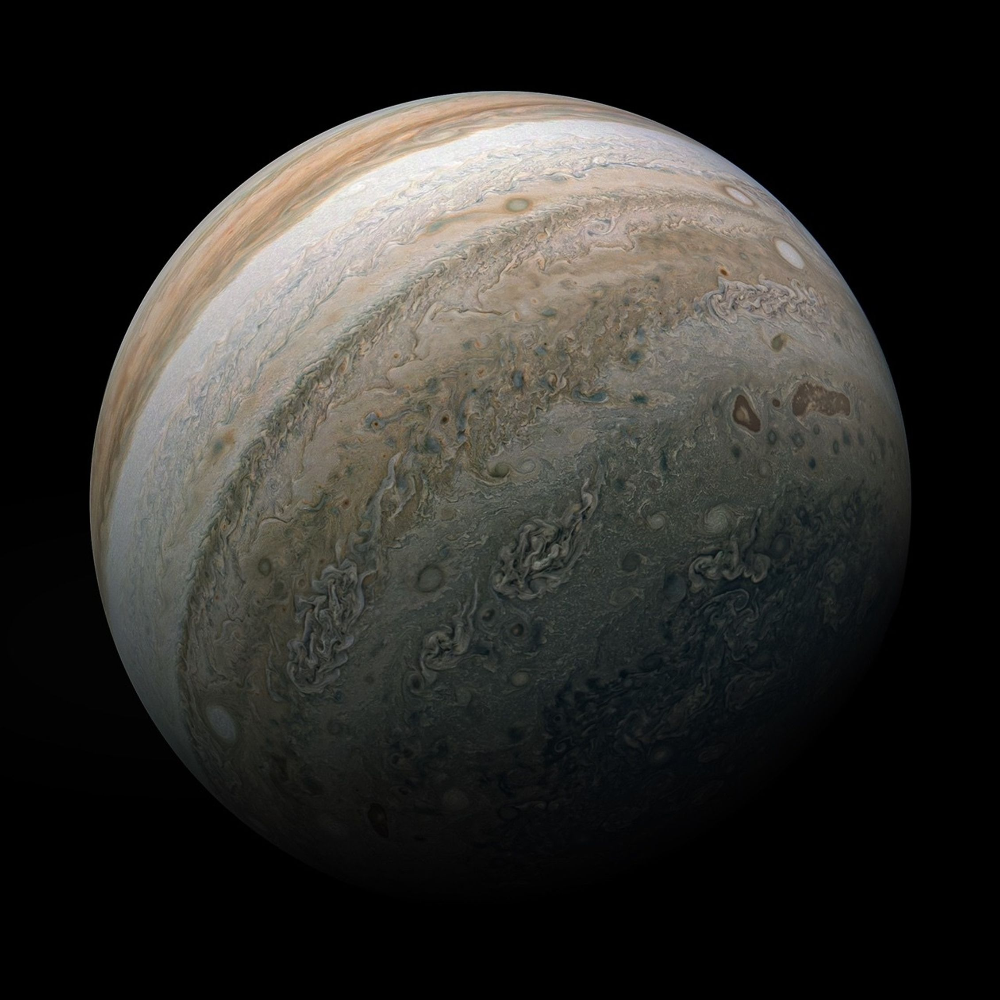
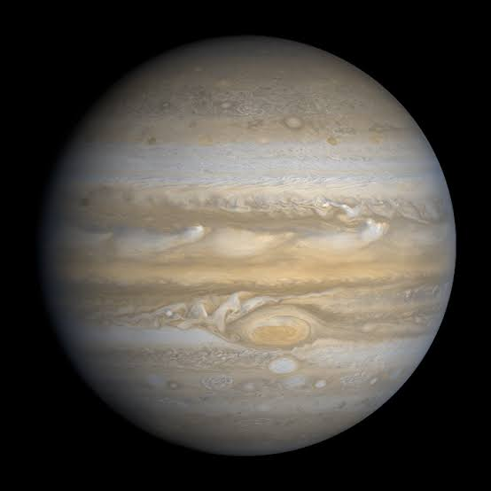

Jupiter
Not a competition. Still the biggest.
A Giant Up Close


Five Facts About Jupiter
- Jupiter is the fifth planet from the Sun.
- Jupiter is the largest planet in our solar system.
- This gas giant is made mostly of hydrogen and helium.
- The Great Red Spot is a huge, long-lasting storm in Jupiter's atmosphere.
- Its four largest moons are Io, Europa, Ganymede, and Callisto.
Moons in Motion
Jupiter has its own busy neighborhood. Start the model to watch its four largest moons orbit, then pause to compare their positions.
- Io · innermost
- Europa
- Ganymede
- Callisto · outermost
Paused. Select Start Orbits to begin.